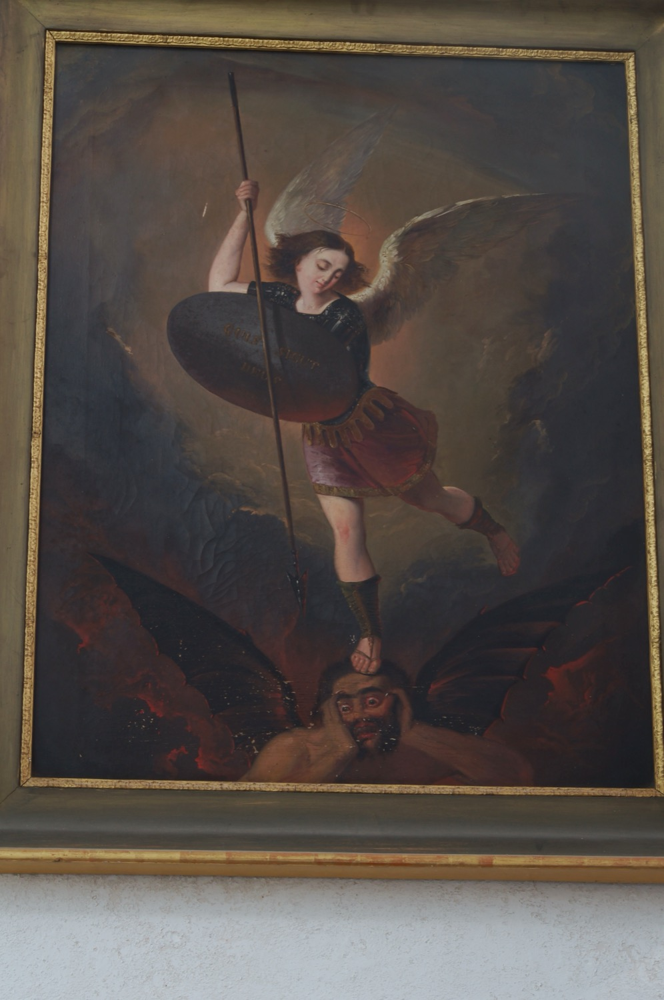

L’arcàngel sant Miquel és el capità de les milícies celestials, el protector d’Israel i de l’Església contra els seus enemics i l’encarregat d’acompanyar les ànimes dels morts fins al cel. En la iconografia cristiana simbolitza, sobretot, la victòria del Bé sobre el Mal.
En aquest quadre se'l representa com un jove alat, vestit com un soldat romà i armat amb una llança i un escut, en el moment d'expulsar a Lucifer del cel i confinar-lo a l’infern. Sobre l’escut hi ha escrit *Quis sicut Deus* (“Qui és com Déu?”), traducció llatina del seu nom hebreu. La inscripció també remet a la tradició medieval segons la qual, quan Lucifer es volgué equiparar a Déu, sant Miquel arengà els altres àngels amb aquestes paraules perquè combatessin contra ell i els àngels que li feien costat.